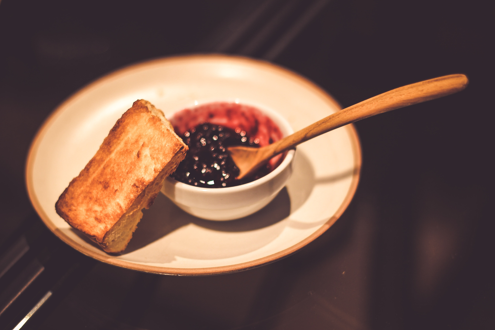
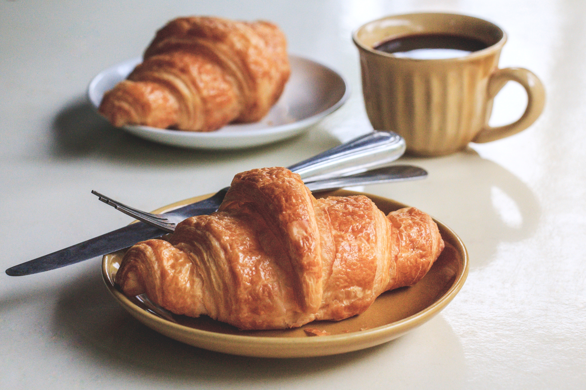

un trionfo nordico di pane di segale, paté e dressing salati, formaggi piccanti e prosciutti affumicati.
Interessante declinazione di pane e confetture: dai panini caldi spalmati con mostarda, alle schiacciate con marmellate dolci e focacce al formaggio.
Cosa se non frutta esotica per colazione? Ananas, cocco, mango e papaya: un trionfo cromatico dal sapore dolcissimo.
Ottimi pancake sormontati da sciroppo d'acero o confettura ai mirtilli e ovviamente bacon e uova strapazzate.

Oltre a focaccine dolci alla cipolla, saranno servite ottime zuppe di legumi, aglio e limone con un filo d'olio d'oliva e salsa tahini al sesamo.
In Francia la colazione è croissant. Con gocce di cioccolato o ripieno di marmellata, integrale al miele o alla crema bianca.
